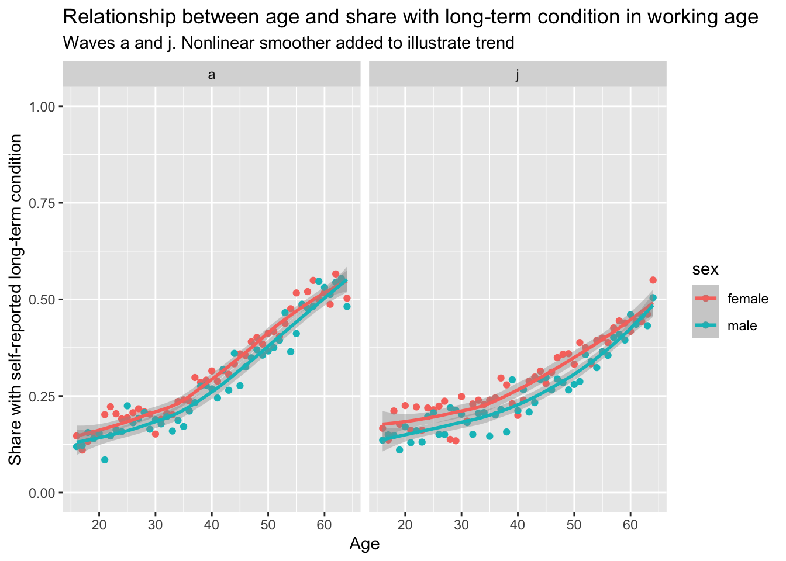

To look at the influence of health condition flags on the modelled propensities to move to/from economic states
To identify relevant health condition flags
To look at the effect that demographics and modifiable exposures have on the probability of developing health conditions
Notes on variables
This page shows the health condition variables. These appear to be two series of flags for 17 separate conditions, with the first set of flags being whether someone has every been diagnosed with a condition, and the second whether they still have the condition. There is then a third conditional set of variables asking, for those who have a condition, for how long they have it.
The variables have the structure hcond{k} and hconds{k} for whether diagnosed, and if still has condition, respectively.
Before jumping into individual conditions, we can start with the binary health variable as described in this page.
# library(haven)# library(here)library(nnet)# devtools::load_all(here('R'))# base_dir_location <- "big_data/UKDA-6614-stata/stata/stata13_se/ukhls"# indresp_files <- dir(here(base_dir_location), pattern = "[a-z]_indresp.dta", full.names = TRUE)varnames <-c("jbstat", "dvage", "sex", "health" )vartypes <-c("labels", "values", "labels", "labels" )df_ind <-get_ind_level_vars_for_selected_waves(varnames = varnames, vartypes = vartypes, waves = letters[1:11])# Clean the data df_ind_health_standardised <- df_ind |># dvage uses negative values to indicate missing. The code below explicitly turns them all to missing valuesmutate(across(dvage, function(x) ifelse(x <0, NA, x))) |># This renames dvage to agerename(age = dvage) |>filter(between(age, 16, 64)) |>mutate(lt_condition =case_when( health %in%c("No", "no") ~FALSE, health %in%c("Yes", "yes") ~TRUE,TRUE~NA_integer_ ) |>as.logical() ) %>%filter(complete.cases(.))
First we want to make health a binary flag, then we want to see if it substantially improves on the penalised model fit (I suspect it does, as does Martin).
# weights: 238 (198 variable)
initial value 593459.785440
iter 10 value 217065.229935
iter 20 value 181835.205003
iter 30 value 176173.701928
iter 40 value 169054.073365
iter 50 value 162622.177139
iter 60 value 158455.088600
iter 70 value 154995.077286
iter 80 value 153202.192527
iter 90 value 150817.463737
iter 100 value 147188.232683
final value 147188.232683
stopped after 100 iterations
# weights: 245 (204 variable)
initial value 593459.785440
iter 10 value 191760.039731
iter 20 value 184082.812596
iter 30 value 178733.279863
iter 40 value 158204.780390
iter 50 value 152963.660689
iter 60 value 150905.271984
iter 70 value 145439.304192
iter 80 value 143925.206548
iter 90 value 143354.046183
iter 100 value 142852.336483
final value 142852.336483
stopped after 100 iterations
Code
AIC(mod_00, mod_01)
df AIC
mod_00 126 294628.5
mod_01 132 285968.7
Code
BIC(mod_00, mod_01)
df BIC
mod_00 126 295967.6
mod_01 132 287371.6
Both AIC and BIC suggest improvements in the model fit from including the health variable, even after accounting for general relationships with age, sex, last_status and so on.
Let’s now estimate the following:
Baseline: Everyone as observed
Bad Counterfactual: Everyone as observed, but with lt_condition set to TRUE for everyone
Good Counterfactual: everyone as observed, but with lt_condition set to FALSE for everyone
preds_baseline <-predict(mod_01, newdata = df_ind_ltcondition_wave_j_baseline, type ="probs")preds_bad_counterfactual <-predict(mod_01, newdata = df_ind_ltcondition_wave_j_bad_counterfactual, type ="probs")preds_good_counterfactual <-predict(mod_01, newdata = df_ind_ltcondition_wave_j_good_counterfactual, type ="probs")predictions_summary_matrix <-cbind(# The number 2 indicates do the sum function for each column.# If it were 1 then this would sum for each row (which should add up to 1 in call cases)apply(preds_baseline, 2, sum),apply(preds_bad_counterfactual, 2, sum),apply(preds_good_counterfactual, 2, sum))colnames(predictions_summary_matrix) <-c("base", "bad_counter", "good_counter")predictions_summary_matrix
base bad_counter good_counter
Employed 15433.4470 14906.9439 15711.7132
Inactive care 1118.1323 1097.9184 1206.4523
Inactive long term sick 939.9568 1247.9731 399.6194
Inactive other 132.0335 143.0457 135.9464
Inactive retired 1468.1179 1498.7436 1569.7351
Inactive student 1266.1211 1300.9934 1266.5607
Unemployed 1017.1914 1179.3818 1084.9730
base bad_counter good_counter
Employed 100 96.58856 101.80301
Inactive care 100 98.19217 107.89889
Inactive long term sick 100 132.76920 42.51465
Inactive other 100 108.34049 102.96357
Inactive retired 100 102.08605 106.92159
Inactive student 100 102.75426 100.03472
Unemployed 100 115.94493 106.66361
Taking a step back
Let’s think about how the demographic controls in the model predicting economic activity status tend to affect whether someone has a long-term condition or not.
We can start with some simple descriptive stats, looking at how age and gender are related to TRUE and FALSE status for long-term conditions
Let’s do this for a couple of waves, A and J:
Code
df_ind_health_standardised |>filter(!is.na(lt_condition)) |>filter(wave %in%c('a', 'j')) |>group_by(wave, sex, age) |>count(lt_condition) |>pivot_wider(names_from ='lt_condition', values_from ='n') |>mutate(share =`TRUE`/ (`TRUE`+`FALSE`)) |>ggplot(aes(x=age, y = share, group = sex, colour = sex)) +facet_wrap(~wave) +geom_point() +stat_smooth() +labs(x ="Age", y ="Share with self-reported long-term condition",title ="Relationship between age and share with long-term condition in working age",subtitle ="Waves a and j. Nonlinear smoother added to illustrate trend" ) +scale_y_continuous(limits =c(0, 1))
`geom_smooth()` using method = 'loess' and formula = 'y ~ x'

These look strongly correlated, especially monotonic, so we would expect the age-condition correlation to be positive, and stronger if using Spearman than Pearson.
# A tibble: 4 × 7
# Groups: wave, sex [4]
wave sex data cor_pear cor_spear cor_between_pear cor_between_spear
<chr> <chr> <list> <list> <list> <dbl> <dbl>
1 a female <tibble> <dbl[…]> <dbl[…]> 0.969 0.966
2 a male <tibble> <dbl[…]> <dbl[…]> 0.956 0.968
3 j female <tibble> <dbl[…]> <dbl[…]> 0.930 0.938
4 j male <tibble> <dbl[…]> <dbl[…]> 0.927 0.931
This indicates that, no matter which wave we look at, or whether using Spearman or Pearson correlation, the correlation between age and probability of having a long-term health condition is very strong. This suggests that in a sense including LT health status is a bit like including the linear effect of age in the model twice, both as the linear component of the age polynomial, and as the highly correlated LT variable. However, for every age, is is plausible to imagine an individual both having or not having an LT condition, and this variable is binary not continuous. We also have first principles reasons for considering LT condition as likely to have an independent effect on labour market engagement.
However we may have to think about the effects of including this model on the extent to which variables are correlated, model fit, and so on…
SF-12 effects
We have looked previously at the effects of improving SF-12 MH and PH components. However we did not do this using the new convenience functions, and predicting the status at T+1 on status at T, rather than status at time T on status at time T-1.
Let’s do this now. (It should be much more straightforward with the new functions…)
Code
library(tidyverse)# library(haven)# library(here)library(nnet)# devtools::load_all(here('R'))# base_dir_location <- "big_data/UKDA-6614-stata/stata/stata13_se/ukhls"# indresp_files <- dir(here(base_dir_location), pattern = "[a-z]_indresp.dta", full.names = TRUE)varnames <-c("jbstat", "dvage", "sex", "sf12mcs_dv", "sf12pcs_dv" )vartypes <-c("labels", "values", "labels", "values", "values" )df_ind <-get_ind_level_vars_for_selected_waves(varnames = varnames, vartypes = vartypes, waves = letters[1:11])# Clean the data df_ind_sf12_standardised <- df_ind |># dvage uses negative values to indicate missing. The code below explicitly turns them all to missing valuesmutate(across(c(dvage, sf12mcs_dv, sf12pcs_dv), function(x) ifelse(x <0, NA, x))) %>%filter(complete.cases(.)) |>mutate(across(c(sf12mcs_dv, sf12pcs_dv), standardise_scores)) |># This renames dvage to agerename(age = dvage) |>filter(between(age, 16, 64))
# weights: 238 (198 variable)
initial value 524979.315476
iter 10 value 192658.313860
iter 20 value 176857.990038
iter 30 value 169692.163769
iter 40 value 151958.454105
iter 50 value 144648.651059
iter 60 value 138954.343056
iter 70 value 134503.216911
iter 80 value 131857.626953
iter 90 value 129284.963603
iter 100 value 126220.997935
final value 126220.997935
stopped after 100 iterations
# weights: 245 (204 variable)
initial value 524979.315476
iter 10 value 227651.498409
iter 20 value 187964.127957
iter 30 value 164909.851423
iter 40 value 150589.133542
iter 50 value 142051.692389
iter 60 value 136317.379751
iter 70 value 131696.791621
iter 80 value 128730.374098
iter 90 value 126660.827293
iter 100 value 125872.284470
final value 125872.284470
stopped after 100 iterations
# weights: 245 (204 variable)
initial value 524979.315476
iter 10 value 295522.478952
iter 20 value 251311.802727
iter 30 value 229054.783763
iter 40 value 203614.854579
iter 50 value 180298.618876
iter 60 value 167006.990297
iter 70 value 151670.014083
iter 80 value 143737.662233
iter 90 value 134333.562627
iter 100 value 130437.994491
final value 130437.994491
stopped after 100 iterations
# weights: 252 (210 variable)
initial value 524979.315476
iter 10 value 292391.984113
iter 20 value 249302.781087
iter 30 value 224934.975540
iter 40 value 206381.001816
iter 50 value 180657.026049
iter 60 value 166457.563661
iter 70 value 150747.803670
iter 80 value 141084.355957
iter 90 value 133039.105700
iter 100 value 126789.558225
final value 126789.558225
stopped after 100 iterations
# weights: 259 (216 variable)
initial value 524979.315476
iter 10 value 169237.735483
iter 20 value 158166.391355
iter 30 value 154285.852770
iter 40 value 150824.298753
iter 50 value 140256.611829
iter 60 value 131423.803331
iter 70 value 127521.865768
iter 80 value 124025.663244
iter 90 value 122890.570793
iter 100 value 122398.796020
final value 122398.796020
stopped after 100 iterations
This suggests the best model includes the interaction between mental health and physical health as well as independent effects.
Because it seems difficult to imagine a scenario where there is an intervention that substantially improves MH without improving PH, or vice versa, and the best model is one that takes into account interactions between the terms, we can imagine improving ‘health’ by a substantial amount, where health is made up equally of both mental health and physical health.
Previously we looked at the effect of changing MH by 1 standard unit without moving PH, or vice versa.
Instead we want to move this imagined quantity ‘health’ by 1 standard unit.
A bit of painfully remembered Pythagoras’ Theorem tells us that, if we increase the PH and MH standardised scores by 1/ sqrt(2) units, then we will have increased this third ‘health’ variable by 1 standardised unit.
Now to run the predictions under these two scenarios
Code
preds_df_baseline <-predict(mod_phmh, newdata = df_baseline, type ="probs")preds_df_counterfactual <-predict(mod_phmh, newdata = df_counterfactual, type ="probs")predictions_summary_matrix <-cbind(# The number 2 indicates do the sum function for each column.# If it were 1 then this would sum for each row (which should add up to 1 in call cases)apply(preds_df_baseline, 2, sum),apply(preds_df_counterfactual, 2, sum))colnames(predictions_summary_matrix) <-c("base", "counterfactual")predictions_summary_matrix
base counterfactual
Employed 14668.7035 15031.3382
Inactive care 999.8574 993.8456
Inactive long term sick 858.4176 610.3561
Inactive other 179.3380 169.2517
Inactive retired 1419.6410 1446.5763
Inactive student 1200.1157 1231.6557
Unemployed 967.9269 810.9766
base counterfactual
Employed 100 102.47217
Inactive care 100 99.39873
Inactive long term sick 100 71.10247
Inactive other 100 94.37581
Inactive retired 100 101.89733
Inactive student 100 102.62808
Unemployed 100 83.78490
We can also imagine scenarios where the overall health effect is the same, but more of it is realised either through improvements in MH OR PH.
Some more Pythagoras suggests we can use 1/ sqrt(5) for the less effective intervention and 2 / sqrt(5) for the more effective intervention (I THINK….)
Code
df_counterfactual_ph_bias <- df_baseline |>mutate(sf12mcs_dv = sf12mcs_dv +1*5^-0.5,sf12pcs_dv = sf12pcs_dv +2*5^-0.5 )df_counterfactual_mh_bias <- df_baseline |>mutate(sf12mcs_dv = sf12mcs_dv +2*5^-0.5,sf12pcs_dv = sf12pcs_dv +1*5^-0.5 )preds_df_counterfactual_ph_bias <-predict(mod_phmh, newdata = df_counterfactual_ph_bias, type ="probs")preds_df_counterfactual_mh_bias <-predict(mod_phmh, newdata = df_counterfactual_mh_bias, type ="probs")predictions_summary_matrix <-cbind(# The number 2 indicates do the sum function for each column.# If it were 1 then this would sum for each row (which should add up to 1 in call cases)apply(preds_df_baseline, 2, sum),apply(preds_df_counterfactual, 2, sum),apply(preds_df_counterfactual_ph_bias, 2, sum),apply(preds_df_counterfactual_mh_bias, 2, sum))colnames(predictions_summary_matrix) <-c("base", "counterfactual_equal", "counterfactual_ph_bias", "counterfactual_mh_bias")predictions_summary_matrix
base counterfactual_equal counterfactual_ph_bias
Employed 14668.7035 15031.3382 15043.2782
Inactive care 999.8574 993.8456 982.4895
Inactive long term sick 858.4176 610.3561 606.4441
Inactive other 179.3380 169.2517 172.8057
Inactive retired 1419.6410 1446.5763 1443.2559
Inactive student 1200.1157 1231.6557 1234.5751
Unemployed 967.9269 810.9766 811.1515
counterfactual_mh_bias
Employed 14991.6734
Inactive care 1004.5392
Inactive long term sick 637.6822
Inactive other 166.7759
Inactive retired 1446.9707
Inactive student 1219.9473
Unemployed 826.4115
base counterfactual_equal counterfactual_ph_bias
Employed 100 102.47217 102.55356
Inactive care 100 99.39873 98.26296
Inactive long term sick 100 71.10247 70.64675
Inactive other 100 94.37581 96.35754
Inactive retired 100 101.89733 101.66344
Inactive student 100 102.62808 102.87134
Unemployed 100 83.78490 83.80298
counterfactual_mh_bias
Employed 102.20176
Inactive care 100.46824
Inactive long term sick 74.28578
Inactive other 92.99528
Inactive retired 101.92511
Inactive student 101.65248
Unemployed 85.37953
Subject to the algebra being correct, this shows the effect of a unit change on health, either biased towards MH or PH. It suggests that generally PH interventions seem to have slightly more impact than MH conditions for LT sick.
Specific health conditions
Let’s now look at some specific health conditions, and the effects of ‘curing’ people of these conditions on economic status
These are the variables {w}hcond{kk} and {w}_hconds{kk} where w is wave, kk is the number of the health condition, and s seems to suggest ‘still’. i.e. hcond is whether ever diagnosed, and hconds is whether still has.
# weights: 140 (114 variable)
initial value 87894.815523
iter 10 value 27778.212177
iter 20 value 24611.456725
iter 30 value 22616.014768
iter 40 value 22236.173988
iter 50 value 22118.540101
iter 60 value 22093.846544
iter 70 value 22085.133308
iter 80 value 22059.984536
iter 90 value 22020.453109
iter 100 value 22013.526811
final value 22013.526811
stopped after 100 iterations
# weights: 147 (120 variable)
initial value 87894.815523
iter 10 value 27860.326299
iter 20 value 24660.233634
iter 30 value 22674.840205
iter 40 value 22363.914689
iter 50 value 22119.270076
iter 60 value 22080.053994
iter 70 value 22068.419707
iter 80 value 22055.988862
iter 90 value 22006.920614
iter 100 value 21996.952461
final value 21996.952461
stopped after 100 iterations
# weights: 147 (120 variable)
initial value 87894.815523
iter 10 value 28081.795772
iter 20 value 25349.269957
iter 30 value 22916.990253
iter 40 value 22289.734322
iter 50 value 22046.739443
iter 60 value 22004.079197
iter 70 value 21992.644137
iter 80 value 21982.668212
iter 90 value 21940.342487
iter 100 value 21923.345128
final value 21923.345128
stopped after 100 iterations
# weights: 147 (120 variable)
initial value 87894.815523
iter 10 value 27445.837110
iter 20 value 25227.080322
iter 30 value 23009.006453
iter 40 value 22525.693540
iter 50 value 22169.591097
iter 60 value 22106.961183
iter 70 value 22089.369689
iter 80 value 22079.208647
iter 90 value 22030.553144
iter 100 value 22005.022973
final value 22005.022973
stopped after 100 iterations
This suggests the depression variable leads to improvements in the model efficiency over the base model whether using the AIC or more stringent BIC criterion. This suggests for now we should perhaps focus on modelling with this outcome, then looking at the other variables.
Our last complete wave with these variables is i, not j as with earlier examples, but the principles are the same.
Before running the model, however, perhaps we should look at the estimated effects of having depression over not having depression on either remaining employed or entering inactive - long-term sick status
Code
predict( mod_depression, newdata =tibble(age =50, sex ="male", this_status ="Employed", has_clinicaldepression =TRUE ), type ="probs")
Employed Inactive care Inactive long term sick
0.898088234 0.001196977 0.028840122
Inactive other Inactive retired Inactive student
0.004096986 0.006706303 0.004203328
Unemployed
0.056868051
Code
predict( mod_depression, newdata =tibble(age =50, sex ="male", this_status ="Employed", has_clinicaldepression =FALSE ), type ="probs")
Employed Inactive care Inactive long term sick
0.949209074 0.001059819 0.007542763
Inactive other Inactive retired Inactive student
0.002028545 0.004590161 0.002445336
Unemployed
0.033124301
This suggests that the depression variable has the expected direction of effects on someone employed ceasing to be employed, becoming long-term sick, becoming unemployed etc.
It would be good to know what proportion of the sample has clinical depression in the last wave, wave i.
Correction: because of hte complete.cases criterion the last wave with reasonable numbers is wave f…
Code
df_ind_hconds_tidied |>filter(wave =='a') |>count(has_clinicaldepression) |>mutate(share = n /sum(n) )
# A tibble: 2 × 3
has_clinicaldepression n share
<lgl> <int> <dbl>
1 FALSE 33910 0.932
2 TRUE 2493 0.0685
Perhaps the first wave, a, would be better to use as it looks more representative of the prevalence of depression in the general population (around 7% not 3%)
Code
df_baseline <- df_ind_hconds_tidied |>filter(wave =='a')df_counterfactual_depressaway <- df_baseline |>mutate(has_clinicaldepression =FALSE)preds_df_baseline <-predict(mod_depression, newdata = df_baseline, type ="probs")preds_df_counter <-predict(mod_depression, newdata = df_counterfactual_depressaway, type ="probs")predictions_summary_matrix <-cbind(# The number 2 indicates do the sum function for each column.# If it were 1 then this would sum for each row (which should add up to 1 in call cases)apply(preds_df_baseline, 2, sum),apply(preds_df_counter, 2, sum))colnames(predictions_summary_matrix) <-c("base", "counterfactual")predictions_summary_matrix
base counterfactual
Employed 19841.939 19958.9941
Inactive care 2591.853 2638.2983
Inactive long term sick 1449.307 1303.6008
Inactive other 163.911 158.0371
Inactive retired 8449.443 8464.0149
Inactive student 1890.389 1879.3117
Unemployed 2016.159 2000.7431
base counterfactual
Employed 100 100.58994
Inactive care 100 101.79199
Inactive long term sick 100 89.94649
Inactive other 100 96.41640
Inactive retired 100 100.17246
Inactive student 100 99.41404
Unemployed 100 99.23539
This suggests that, if everyone who reported clinical depression in wave a (the wave where it was asked of most of the sample(?)), instead did not have this diagnosis, then the long-term sickness population would reduce by around 10%. Given the proportion reporting a clinical depression diagnosis in the first wave was around 7%, this indicates over-representation of those with clinical depression in the long-term sick inactive subpopulation, and that within this group treating (‘curing’/‘de-diagnosing’) the depression would have a very large impact.
Let’s briefly look at the proportions with clinical depression in this first wave by economic status
# A tibble: 7 × 4
# Groups: this_status [7]
this_status has_diabetes n share
<chr> <lgl> <int> <dbl>
1 Employed TRUE 652 0.0330
2 Inactive care TRUE 156 0.0589
3 Inactive long term sick TRUE 235 0.168
4 Inactive other TRUE 12 0.0545
5 Inactive retired TRUE 1078 0.136
6 Inactive student TRUE 20 0.00881
7 Unemployed TRUE 108 0.0496
What about the estimated effects of diabetes given the equivalent wave a composition:
Code
df_baseline <- df_ind_hconds_tidied |>filter(wave =='a')df_counterfactual_diabetesaway <- df_baseline |>mutate(has_diabetes =FALSE)preds_df_baseline <-predict(mod_diabetes, newdata = df_baseline, type ="probs")preds_df_counter <-predict(mod_diabetes, newdata = df_counterfactual_diabetesaway, type ="probs")predictions_summary_matrix <-cbind(# The number 2 indicates do the sum function for each column.# If it were 1 then this would sum for each row (which should add up to 1 in call cases)apply(preds_df_baseline, 2, sum),apply(preds_df_counter, 2, sum))colnames(predictions_summary_matrix) <-c("base", "counterfactual")predictions_summary_matrix
base counterfactual
Employed 19850.3040 19880.0583
Inactive care 2593.3798 2558.1987
Inactive long term sick 1438.2470 1415.5528
Inactive other 164.6762 169.6738
Inactive retired 8448.5706 8470.6175
Inactive student 1890.8146 1894.0626
Unemployed 2017.0078 2014.8363
base counterfactual
Employed 100 100.14989
Inactive care 100 98.64343
Inactive long term sick 100 98.42209
Inactive other 100 103.03482
Inactive retired 100 100.26095
Inactive student 100 100.17178
Unemployed 100 99.89234
This suggests the complete mitigation of Diabetes would have some effects on working age economic participation, but these would be modest as compared with fully mitigating clinical depression.
High blood pressure
Unlike the other flags, high blood pressure is associated with a reduction in penalised model fit. However we might want to look at this in any case
Code
df_baseline <- df_ind_hconds_tidied |>filter(wave =='a')df_counterfactual_tensesaway <- df_baseline |>mutate(has_highbloodpressure =FALSE)preds_df_baseline <-predict(mod_diabetes, newdata = df_baseline, type ="probs")preds_df_counter <-predict(mod_diabetes, newdata = df_counterfactual_diabetesaway, type ="probs")predictions_summary_matrix <-cbind(# The number 2 indicates do the sum function for each column.# If it were 1 then this would sum for each row (which should add up to 1 in call cases)apply(preds_df_baseline, 2, sum),apply(preds_df_counter, 2, sum))colnames(predictions_summary_matrix) <-c("base", "counterfactual")predictions_summary_matrix
base counterfactual
Employed 19850.3040 19880.0583
Inactive care 2593.3798 2558.1987
Inactive long term sick 1438.2470 1415.5528
Inactive other 164.6762 169.6738
Inactive retired 8448.5706 8470.6175
Inactive student 1890.8146 1894.0626
Unemployed 2017.0078 2014.8363